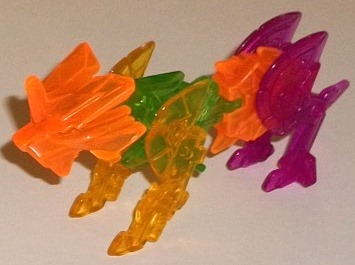
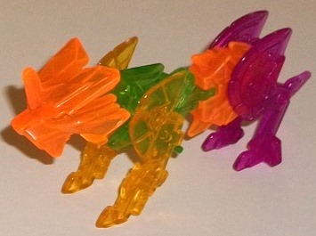

Difficulty of Assembly : Easy
Color Scheme : Transparent violet, transparent amber, transparent fiery orange, and transparent green
Rating : 6.1
Dragonus' alternate mode,
like the rest of the early Decepticon Mini-Cons, is a torpedo which can
be launched from the
Fracture deployer
figure
. In torpedo mode, Dragonus actually... looks a heck of a lot
like a torpedo, as there's no obvious feet or arms or anything of the sort
sticking out of the mode. From a straight-on side view you can just see
the feet a bit, but this is really getting nitpicky-- they don't show in
any remotely normal view, given that you're almost always looking top-down
on this toy since it's pretty small. Given the shape and milky lime green
color that is pretty much the only visible color in this mode, Dragonus
actually looks quite a lot like a mechanical leaf. His mold detailing is
somewhat smooth but made to look like segmented armor bits, which is pretty
cool-- shame there's no paint to bring out any of those details.
To transform Dragonus
to his dragon mode, you simply pull apart the halves of his torpedo mode
which become wings, while the head auto-transforms into place. Then you
fold up the tail piece and you're done. Though simple, Dragonus' dragon
mode is also quite well-done, given the limitations inherent in the size
class. (His tail can move up and down SLIGHTLY, as well as his neck from
side-to-side a bit, but that's it as far as articulation-- try to move
the wings and you start to activate his transformation.) The two feet on
the underside are way too small for a dragon, but ignoring that his proportions
are fairly good, with long wings, a fairly long tail, and a decent-sized
body with a slim head. His mold detailing is fairly sparse like in his
other mode, but what mold detailing there is is curvy and relatively organic-looking
compared to most other RID Mini-Cons. It's on his head that Dragonus has
his only paint apps-- metallic bronze on most of his head, with silver
on the eyes. There's also some bronzish brown plastic used for the limbs
that connect his wings to his main body to help give this toy at least
a bit more color, but that's it as far as his color scheme goes. The wings
in particular really could've used some more of that bronze paint, but
overall the toy still gives off that "earthy leaf" feel that it had in
torpedo mode. It IS odd that there are TWO limbs stretching from each wing
to the main body, but this is for stability/safety's sake, I'm sure. For
armor, Dragonus gets transparent violet armor bits, which help add some
very-much-needed dark to this color scheme and go extremely well with his
lime green. He's got a cool rotary machine gun piece that goes on his back,
a wicked-looking mask that goes over his face, claw pieces that go underneath
the front of his wings, purple "flame"-like pieces that peg in next to
the aforementioned claws, and pieces that look... like... well, the rear
legs of a lion (see below) that clip onto the sides of his wings. The latter
pieces look too much like the bonus figure's limbs to really be anything
else, but the rest of the armor bits are really cool and help add something
else to this mode. Unfortunately, the little "flame" bits fall off at the
drop of a hat, given they're only held on by a little bit of friction on
tabs that face downwards-- those tabs should have been deeper, or something.
All pieces CAN fit on in torpedo mode, thankfully.
Dragonus may be simple,
but he's a cool little Mini-Con, with a very solid torpedo mode and a dragon
mode that's nearly flawless, if you excuse the usual Mini-Con downsides
of very little articulation and not enough paint. Overall, this is definitely
my favorite Mini-Con torpedo mold and one of my favorite RID Mini-Con molds,
period. If you like the Mini-Con gimmick and have Fracture, this is an
easily recommended purchase.
 Wave
1 "Bonus" Figure
Wave
1 "Bonus" Figure

Difficulty of Assembly
: Easy
Color Scheme
: Transparent violet,
transparent amber, transparent fiery orange, and transparent green
Rating
: 6.1
Completely unmentioned
in the instructions or on the package for any of the Wave 1 Mini-Cons,
the only reason this "bonus" figurine is known about is because Hasbro
mentioned it at some convention panels. To make it, you take the head and
upper back pieces from
Slipstream
, the
scythe pieces from
Divebomb
, the side guns
from
Sawback
, and the side gun/leg pieces
from Dragonus. To assemble them, you connect the two Divebomb scythe pieces
together, attach Slipstream's back piece to one end to make the waist,
and then attach the lion head on the front of the scythe and the leg pieces
from Dragonus and Sawback in their obvious holes on the sides of the body.
The end result is a lion-like creature... but with a unicorn horn? Whatever,
it looks pretty cool for an extra. Of course, given the nature of this
figure the colors are a bit wacky and rainbow-esque, but the colors themselves
all look individually pretty good. The main body and legs are quite skinny,
so when looked at from a front view the lion looks way too skinny beyond
the head, but the more you turn him to the side the more he looks pretty
darned cool. Plus, as an unexpected bonus, he actually has more articulation
the the Mini-Cons! Because of the way he's put together, he can move back-and-forth
at each leg, and his waist can move slightly from side to side due to how
it connects to the rear body section. The lion has no paint on it, and
I kinda wish it had a tail, though.
The Wave 1 "bonus" figure
is a DARNED cool "free" extra, and goes well with the other Mini-Con toys.
The haphazard colors can be both a downside and an upside, depending upon
how you want to look at it, and he is a bit 2-D, but him having articulation
is a really nice touch. I think it's worth permanently taking those armor
pieces away from the Wave 1 Mini-Cons to form this guy, he's a pretty nifty
little toy for what he is.
Reviews by Beastbot